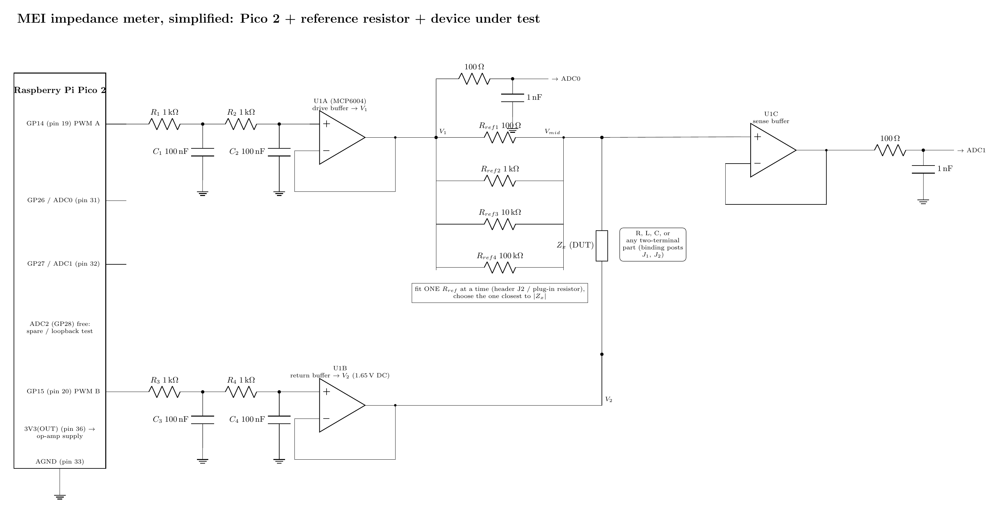
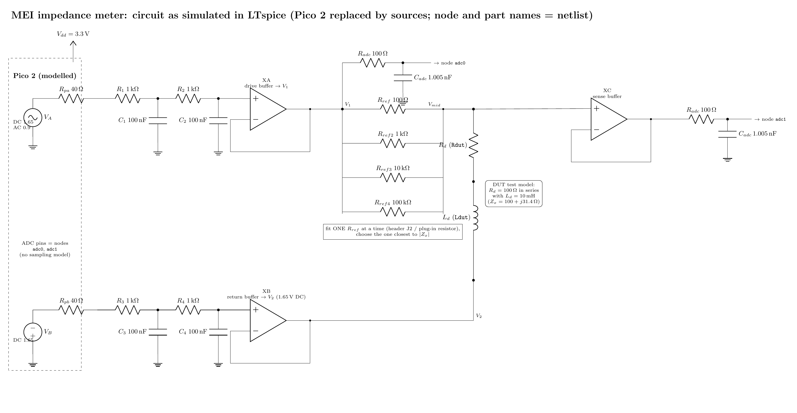
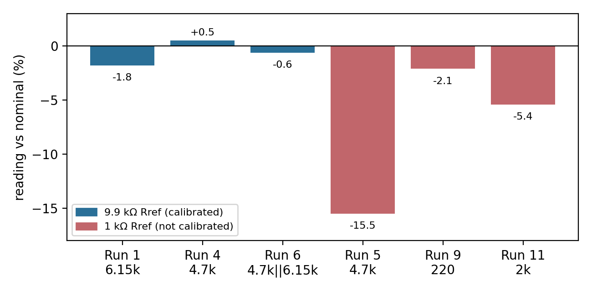

Measurements and Electrical Instruments (MEI) course project, IIT Bhubaneswar
Name: Prabhuparth Choudhar | Roll No.: 24EE01065 | Date: 13 November 2026
Build an instrument that measures an unknown impedance Zx (R, L or C) at 125, 250, 500 and 1000 Hz, using a Raspberry Pi Pico 2, a reference resistor, op-amp buffers and software (lock-in detection and calibration). Check the design in simulation first, then build it on a breadboard and test it.
Scope of this report: one circuit (a resistive divider with a reference resistor), simulated in LTspice, built on a breadboard, and tested with resistors and capacitors.
A reference resistor Rref is in series with the unknown Zx. The Pico drives V1 (sine, PWM through a filter and buffer). The other end of Zx is held at V2 = 1.65 V DC. The ADC reads V1 and the middle node Vmid.
Current: I = (V1 − Vmid) / Rref. With H = Vmid / V1 (complex ratio of the AC parts, V2 is DC so it drops out):
Zx = Rref · H / (1 − H)
R = Re(Zx), X = Im(Zx), L = X/ω, C = −1/(ωX), ω = 2πf. The result is a ratio, so the exact signal amplitude and ADC reference do not matter, only Rref and the ADC channel match do. Accuracy is best when |Zx| is close to Rref, so Rref is selectable (100 Ω, 1 kΩ, 9.9 kΩ, 100.4 kΩ measured values; one fitted at a time).

Figure 1. Circuit as built. Full-size drawing: hardware/mei_circuit_divider.pdf.

Figure 2. Circuit as simulated in LTspice (file simulation/ltspice/Model1.asc). Full-size drawing: simulation/ltspice/mei_circuit_ltspice.pdf.
| Rref | |V(adc0)| | |V(adc1)| | Zx computed (Ω) | R error | X error |
|---|---|---|---|---|---|
| 100 Ω | 0.6820 V | 0.3531 V | 100.047 + j31.370 | +0.047 % | −0.15 % |
| 1 kΩ | 0.6820 V | 0.0650 V | 100.020 + j31.411 | +0.020 % | −0.016 % |
| 10 kΩ | 0.6820 V | 0.0071 V | 100.017 + j31.415 | +0.017 % | −0.003 % |
| 100 kΩ | 0.6820 V | 0.0007 V | 100.017 + j31.416 | +0.017 % | 0.000 % |
True value: 100 + j31.416 Ω. Remaining error is the finite op-amp bandwidth (GBW 1 MHz) and the 100 Ω + 1 nF ADC input filters. The error is largest for Rref = 100 Ω.
The same table shows the signal level problem: V(adc0) is 0.68 V peak, not the 0.9 V set at the source, because the two-stage RC filter attenuates 500 Hz (gain about 0.77). With Rref = 100 kΩ and Zx = 105 Ω, V(adc1) is 0.7 mV, below the ADC noise of about 0.5 mV rms for a single sample. In the simulation there is no ADC noise, so this does not show up in the numbers. Rref should be chosen close to |Zx|.
| Check | Result |
|---|---|
| ADC offset, input shorted to AGND (2000 samples) | ADC0 4.54 mV, ADC1 4.66 mV, ADC2 4.60 mV; noise 0.51 to 0.58 mV rms |
| DC loopback, same node on all three channels (50 % duty) | ADC0 1647.08 mV, ADC1 1647.11 mV, ADC2 1647.91 mV |
| Gain from linear fits vs PWM duty (10 to 90 %) | ADC1 is +0.055 % and ADC2 is +0.082 % relative to ADC0. A correction of 1/1.00055 is applied to ADC1 (DC only). |
| Fixed series offset in the Zx path (DC differential test) | About 25 to 30 Ω extra. This is added to the reading and was removed by the short-circuit calibration. Source not identified (contacts, binding posts or the V2 buffer). |
| Open-circuit amplitude of H (Rref 9.9 kΩ) | 0.9991 / 0.9970 / 0.9878 / 0.9531 at 125 / 250 / 500 / 1000 Hz (ideal 1). Repeatable, phase near 0. Removed by calibration. |
| Short circuit, H (Rref 9.9 kΩ) | Below 0.0008 (under 8 Ω) |
Nominal values were noted while changing parts and were not all re-measured with a multimeter. Δ is the reading against the nominal. Rref = 9.9 kΩ range is calibrated (short, open, 1.001 kΩ). The 1 kΩ range is not calibrated.
| # | Zx (nominal) | Rref | Reading | Δ | Fit error |
|---|---|---|---|---|---|
| 1 | 6.15 kΩ | 9.9 kΩ | R = 6039.55 Ω | −1.8 % | 0.35 % |
| 2 | 6.15 kΩ ∥ 80 nF | 9.9 kΩ | R = 5764.95 Ω ∥ C = 70.36 nF | R −6.3 % | 5.21 % |
| 3 | 6.15 kΩ ∥ 80 nF | 1 kΩ (command said 10k) | R = 57895 Ω ∥ C = 6.62 nF | invalid | 5.69 % |
| 4 | 4.7 kΩ | 9.9 kΩ | R = 4723.35 Ω | +0.5 % | 0.17 % |
| 5 | 4.7 kΩ | 1 kΩ | R = 3969.47 Ω | −15.5 % | 9.84 % |
| 6 | 4.7 kΩ ∥ 6.15 kΩ (2.664 kΩ) | 9.9 kΩ | R = 2648.34 Ω | −0.6 % | 0.26 % |
| 7 | 80 nF | 9.9 kΩ | C = 72.36 nF, series R = 268 Ω | C −9.5 % | 1.77 % |
| 8 | 1 kΩ + 80 nF series | 9.9 kΩ | R = 1274.34 Ω + C = 74.77 nF | R +27.4 %, C −6.5 % | 2.01 % |
| 9 | 220 Ω | 1 kΩ | R = 215.43 Ω | −2.1 % | 2.62 % |
| 10 | 80 nF | 1 kΩ | C = 66.14 nF, series R = 475 Ω | C −17 % | 2.02 % |
| 11 | 2 kΩ | 1 kΩ | R = 1891.91 Ω | −5.4 % | 5.95 % |
| 12 | 2 kΩ ∥ 80 nF (+ 220 Ω, connection not recorded) | 1 kΩ | R = 2094.05 Ω ∥ C = 53.65 nF | n/a | 7.33 % |

Figure 3. Resistor-only runs: reading against nominal.
Observations:
| Frequency | 125 Hz | 250 Hz | 500 Hz | 1000 Hz |
|---|---|---|---|---|
| Rs | 1386 Ω | 1190 Ω | 1109 Ω | 1107 Ω |
| Cs | 162.9 nF | 158.6 nF | 156.3 nF | 159.0 nF |
Best fit: R + C series, R = 1120 Ω, C = 159.4 nF, fit error 2.4 %. C is steady across frequency, which suggests the part is about 160 nF, not 200 nF. The excess resistance above the known 1.001 kΩ divided by the reactance gives a loss factor of about 0.06, which is high for a film capacitor. Not verified against a reference meter.
About 1 to 2 % on resistance on the calibrated range. Limits: Rref known only to about 1 % (multimeter), the known-resistor calibration point (1.001 kΩ) is itself a multimeter reading, and the three-point calibration residual is about 12 Ω in Z. A full uncertainty budget (GUM) has not been done.
| LTspice | Hardware | |
|---|---|---|
| Resistor / R+L accuracy | 0.02 % to 0.15 % (ideal parts, no noise) | about 2 % (calibrated range) |
| Offset in Zx path | none | 25 to 30 Ω before calibration |
| Open-circuit H at 1 kHz | about 1 (op-amp lag only) | 0.953 before calibration |
| ADC | ideal nodes | offset 4.6 mV, noise 0.5 mV, channel gain mismatch up to 0.08 %, sampling skew 19 µs |
| Parts | exact values | about 1 % resistors measured by multimeter, breadboard contacts |
The simulation gives the lower limit set by the circuit itself. The difference to the hardware (about 2 %) is from component tolerance, the series offset, the AC amplitude droop at the open circuit, ADC effects and the uncertainty of the calibration standards, which are not in the LTspice model. The simulation did not predict the 25 to 30 Ω offset or the amplitude droop. The effect of capacitor losses was not simulated.
A divider-type impedance meter was simulated in LTspice (error under 0.15 % with ideal parts) and built on a breadboard. After calibration it measures resistors to about 2 % on the 9.9 kΩ range and identifies R, R∥C and R+C. Capacitor values and the other ranges still need verification.